File: 000090.gt.txt (if the image is defective, simply delete all Arabic text and the line will be excluded)
الجنيد الخطبي، قال : حدثنا أبو بكر عبدالعزيز بن جعفر، قال : حدثنا علي
File: 000091.gt.txt (if the image is defective, simply delete all Arabic text and the line will be excluded)
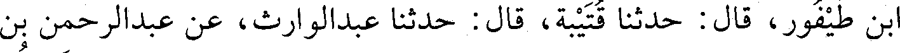
بن طيفور، قال : حدثنا قتيبة، قال : حدثنا عبدالوارث، عن عبدالرحمن بن
File: 000092.gt.txt (if the image is defective, simply delete all Arabic text and the line will be excluded)
إسحاق، عن النعمان بن سعد، عن علي، قال : قال رسول الله صعلم : «خيركم
File: 000093.gt.txt (if the image is defective, simply delete all Arabic text and the line will be excluded)
من تعلم القرآن وعلمه»(2) .
File: 000094.gt.txt (if the image is defective, simply delete all Arabic text and the line will be excluded)
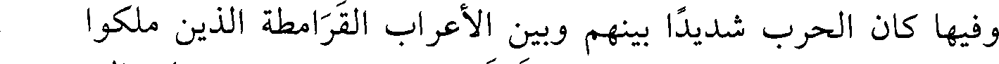
وفيها كان الحرب شديدا بينهم وبين الأعراب القرامطة الذين ملكوا
File: 000095.gt.txt (if the image is defective, simply delete all Arabic text and the line will be excluded)
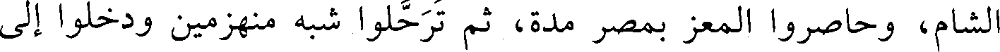
الشام، وحاصروا المعز بمصر مدة، ثم ترحلوا شبه منهزمين ودخلوا إلى
File: 000096.gt.txt (if the image is defective, simply delete all Arabic text and the line will be excluded)
بلاد الحسا والقطيف.
File: 000097.gt.txt (if the image is defective, simply delete all Arabic text and the line will be excluded)
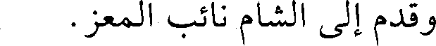
وقدم إلى الشام نائب المعز.
File: 000098.gt.txt (if the image is defective, simply delete all Arabic text and the line will be excluded)
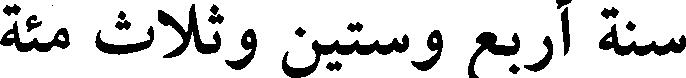
سنة أربع وستين وثلاث مئة
File: 000099.gt.txt (if the image is defective, simply delete all Arabic text and the line will be excluded)
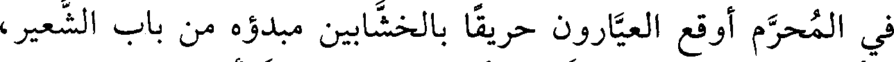
في المحرم أوقع العيارون حريقا بالخشابين مبدؤه من باب الشعير،
File: 000100.gt.txt (if the image is defective, simply delete all Arabic text and the line will be excluded)
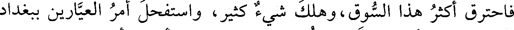
فاحترق أكثر هذا السوق، وهلك شيء كثير، واستفحل أمر العيارين ببغداد
File: 000101.gt.txt (if the image is defective, simply delete all Arabic text and the line will be excluded)
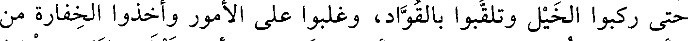
حتى ركبوا الخيل وتلقبوا بالقواد، وغلبوا على الأمور وأخذوا الخفارة من
File: 000102.gt.txt (if the image is defective, simply delete all Arabic text and the line will be excluded)
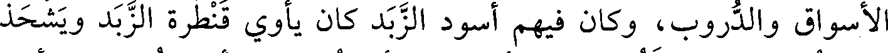
الأسواق والدروب، وكان فيهم أسود الزبد كان يأوي قنطرة الزبد ويشحذ
File: 000103.gt.txt (if the image is defective, simply delete all Arabic text and the line will be excluded)
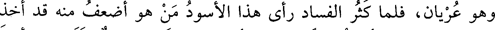
وهو عريان، فلما كثر الفساد رأى هذا الأسود من هو أضعف منه قد أخذ
File: 000104.gt.txt (if the image is defective, simply delete all Arabic text and the line will be excluded)
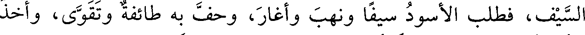
السيف، فطلب الأسود سيفا ونهب وأغار، وحف به طائفة وتقوى، وأخذ
File: 000105.gt.txt (if the image is defective, simply delete all Arabic text and the line will be excluded)
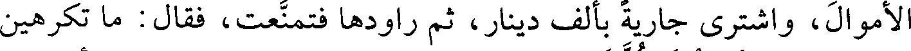
الأموال، واشترى جارية بألف دينار، ثم راودها فتمنعت، فقال: ما تكرهين
File: 000106.gt.txt (if the image is defective, simply delete all Arabic text and the line will be excluded)
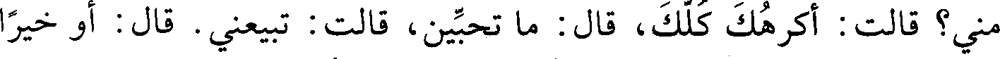
مني؟ قالت: أكرهك كلك، قال: ما تحبين؟ قالت: تبيعني. قال: أو خيرا
File: 000107.gt.txt (if the image is defective, simply delete all Arabic text and the line will be excluded)
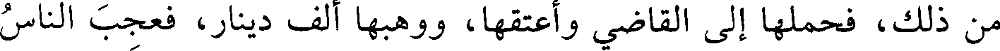
من ذلك، فحملها إلى القاضي وأعتقها، ووهبها ألف دينار، فعجب الناس
File: 000108.gt.txt (if the image is defective, simply delete all Arabic text and the line will be excluded)
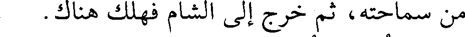
من سماحته، ثم خرج إلى الشام فهلك هناك.
File: 000109.gt.txt (if the image is defective, simply delete all Arabic text and the line will be excluded)
وقطعت خطبة الطائع لله ببغداد وغيرها من يوم العشرين من جمادى
File: 000110.gt.txt (if the image is defective, simply delete all Arabic text and the line will be excluded)
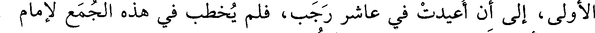
الأولى، إلى أن أعيدت في عاشر رجب، فلم يخطب في هذه الجمع لإمام
File: 000111.gt.txt (if the image is defective, simply delete all Arabic text and the line will be excluded)
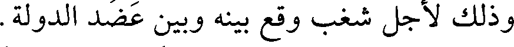
وذلك لأجل شغب وقع بينه وبين عضد الدولة.
File: 000112.gt.txt (if the image is defective, simply delete all Arabic text and the line will be excluded)
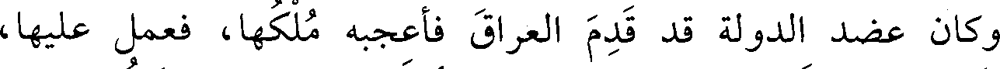
وكان عضد الدولة قد قدم العراق فأعجبه ملكها، فعمل عليها،
File: 000113.gt.txt (if the image is defective, simply delete all Arabic text and the line will be excluded)
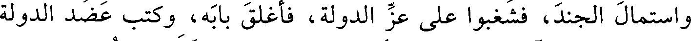
واستمال الجند، فشغبوا على عز الدولة، فأغلق بابه، وكتب عضد الدولة
File: 000114.gt.txt (if the image is defective, simply delete all Arabic text and the line will be excluded)
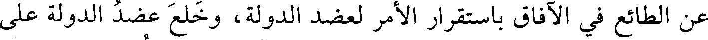
عن الطائع في الآفاق باستقرار الأمر لعضد الدولة، وخلع عضد الدولة على
File: 000115.gt.txt (if the image is defective, simply delete all Arabic text and the line will be excluded)
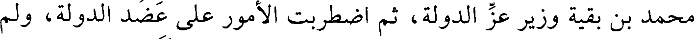
محمد بن بقية وزير عز الدولة، ثم اضطربت الأمور على عضد الدولة، ولم
File: 000116.gt.txt (if the image is defective, simply delete all Arabic text and the line will be excluded)
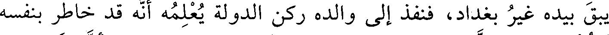
يبق بيده غير بغداد، فنفذ إلى والده ركن الدولة يعلمه أنه قد خاطر بنفسه
File: 000117.gt.txt (if the image is defective, simply delete all Arabic text and the line will be excluded)
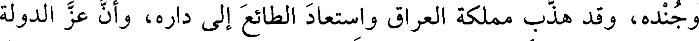
وجنده، وقد هذب مملكة العراق واستعاد الطائع إلى داره، وأن عز الدولة
File: 000118.gt.txt (if the image is defective, simply delete all Arabic text and the line will be excluded)
عاص لا يقيم دولة، فلما بلغه ذلك غضب، وقال للرسول: قل له: خرجت
File: 000119.gt.txt (if the image is defective, simply delete all Arabic text and the line will be excluded)
في نصرة أحمد ابن أخي أو في الطمع في مملكته؟ فأفرج عضد الدولة عن
To Save: `Ctrl+s`, make sure to choose `Webpage, complete`!